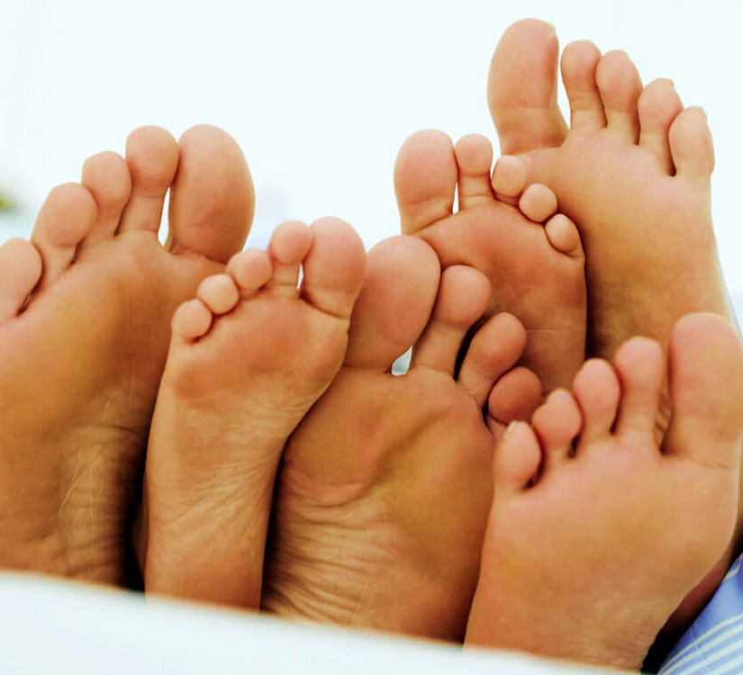

Prendre soin de son corps c’est prendre soin de son être
Le Reiki est l’énergie vitale et universelle qui nous entoure et circule en nous. Elle agît sur les plans physique, émotionnel, mental et spirituel. Elle apaise et procure une relaxation profonde, une réelle détente ainsi qu’un lâcher prise !
Prendre du temps pour soi en s’autorisant une pause douceur, un excellent moment de détente, de lâcher prise … Les plus stressés apprécieront cette impression de voyager sur un petit nuage !
La réflexologie plantaire est une méthode de massage par les pieds très agréable. Elle procure bien-être, relâche les tensions nerveuses et autres blocages énergétiques !
À Propos
Quand le bien-être est entré dans ma vie !
Mon parcours dans le bien-être est issu de mon histoire personnelle, un profond mal être intérieur à un tournant de la vie où on se pose beau nombre de questions… souvent sans réponses ! À ce moment-là, je me suis dirigée vers un thérapeute exceptionnel qui après avoir parcouru un « petit bout de chemin » avec lui (Jean-Marie se reconnaîtra !).
Son soutien, ses conseils, ses enseignements, beaucoup de temps aussi et de travail personnel … il a su me redonner la joie de vivre et me remettre sur la voie du bonheur! À l’issue de quoi j’étais tellement admirative du bien-être qu’il m’avait procuré par le biais des soins énergétiques et de son écoute, qu’il me prenait à imaginer à mon tour aider et apaiser les personnes qui comme moi souffrait de mal être.
Prends soin de ton corps pour que ton âme ait envie de l’habiter
Et c’est en 2010, que j’ai fait la connaissance d’une personne qui partageait mon intérêt pour les techniques de soins énergétiques. Au fil de nos échanges sur nos différentes histoires et approches de l’énergétique, nous sommes devenus amis (et là c’est Pat qui se reconnaitra !) Il m’a parlé de sa rencontre avec le Reiki puis plus tard du massage de Breuss. Curieuse de découvrir ces techniques, j’ai reçu quelques soins qui m’ont convaincue de l’importance de l’énergétique mais aussi du bien-être que cela apportait. C’est en 2012 que je me lance en décidant de me former à mon tour au massage Breuss (pour le bonheur de ma famille sur lesquels j’ai pu pratiquer les enseignements reçus ! ).
J’ai ensuite continué à me faisant initier au Reiki par mon ami Pat puis à me former à la Réflexologie Plantaire … formation reçue ensemble avec Pat! Eh oui belle complicité ! En quête de reconversion professionnelle, il m’est apparu évident de partager ce bien être afin d’en faire profiter les personnes qui ont besoin de se relaxer, de se détendre !
Prestations
Reiki

Le Reiki est la capacité innée de canaliser l’énergie de guérison à travers les mains. La transmission du Reiki se fait par l’imposition des mains sur le corps du receveur, une relaxation profonde est ressentie ainsi qu’une sensation de bien-être. C’est un moyen simple de prendre soin de soi et des autres. Le Reiki est une méthode de développement de la personnalité à tous les niveaux tant physique, émotionnel, mental et spirituel plus qu’une méthode de guérison dans le sens médical du terme. Le Reiki stimule les mécanismes d’auto-guérison et peut donc être un bon complément à tout traitement médical.
Massage de Breuss
Le massage Breuss est bien plus qu’une thérapie pour le dos. C’est une technique de massage qui corrige tous les problèmes de blocages psychiques et musculaires du corps. Il régénère la colonne vertébrale et les disques intervertébraux tout en améliorant le fonctionnement de tous les organes et de l’appareil moteur du patient. Le masseur utilise toujours de l’huile de millepertuis pour réaliser le massage, un remède reconnu pour ses vertus anti-inflammatoires mais aussi calmantes et relaxante. Il procure également un bien-être général et il est recommandé aux personnes sujettes au stress.
Réflexologie Plantaire
La réflexologie est une approche à la fois douce et profonde, à l’écoute du langage du corps par l’intermédiaire des pieds. Elle a pour but de stimuler les mécanismes d’auto-guérison pour rétablir et maintenir l’équilibre naturel. La réflexologie plantaire considère l’individu dans sa globalité. De par son approche énergétique, la réflexologie permet d’aller au-delà des symptômes, à l’origine des troubles. La réflexologie va pouvoir détecter (sans diagnostiquer) ces tensions corporelles pour les libérer en rétablissant la circulation de l’énergie. La réflexologie a un effet relaxant immédiat, bénéfique pour la santé. En relâchant le stress, elle crée une sensation de calme et de bien-être indispensable à l’équilibre naturel du corps.
Tarifs
Reiki
Durée de la séance : 60 min
Prix : 40€
Massage de Breuss
Durée de la séance : 40 min
Prix : 40€
Réflexologie Plantaire
Durée de la séance : 40/45 min
Prix : 40€
Formule découverte
3 soins au choix
Prix : 100€
Bon cadeau
Prix : 40€
Vous voulez offrir un moment de détente, faire plaisir à vos proches pour un anniversaire, Noël ou toutes autres occasions ? Vous pouvez me contacter pour plus de renseignements